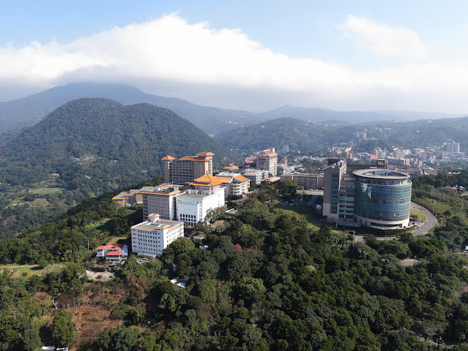
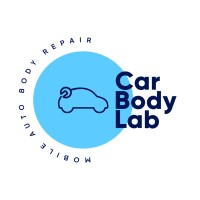
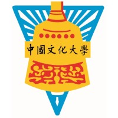
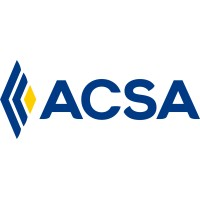

Nelson Cruz
Strategy & Innovation
Dedicated professional with innovated ideas for business development. Highly effective in decision
making and strategic thinking oriented to results. Self-taught person, with learning capacity, and easy
adaptation to the work environment. Constantly looking for new challenges that allow me to add value
to my working experience and perform my duties ethically and morally.
Education
- Master Degree
- International Business/Trade/Commerce
- Global Business Administration and Management
- Bachelor of Science
- Corporate Finance
- Dr. Jose Matias Delgado University - El Salvador - (2010 - 2014)
- Activities and societies: Financial Strategy Proposal for medium coffee producers to Obtain Microcredits in El Salvador.
(open access Creative Commons CC BY license)

Work Experience
- CarBodyLab
- Chief of Staff Officer
- Jan 2024 - Present - 10 mos
- Costa Mesa, California, United States - Hybrid
- Head Of Sales & Market Development
- Dec 2022 - Dec 2023 - 1 yr 1 mos
- Miami Beach, Florida, United States - Hybrid
- Head Of Business Operations
- Nov 2019 - Dec 2022 - 3 yrs 2 mos
- Miami Beach, Florida, United States - Hybrid
- Grupo BMC El Salvador
- Project Manager
- Aug 2018 - Aug 2019 - 1 yr 1 mo
- San Salvador, El Salvador
- Chinese Culture University
- Startegic Planning Analyst
- Feb 2017 - Jul 2028 - 1 yr 10 mos
- Taipei City, Taiwan
- Aseguradora ACSA
- Senior Collections Specialist
- Apr 2014 - Jul 2016 - 2 yrs 4 mos
- San Salvador, El Salvador
- FUSADES
- Accounting Assitant - International
- Oct 2012 - Jan 2013 - 4 mos
- La Libertad, El Salvador



Skills
- Strategic Thinking
- Open Innovation
- Business Process Re-Engieneering
- Team Work
- Project Management
- Self Learning
- Market & Business Developemnt
- Operations Maanagement
- Profesional & Technical English
- Programing On The Making!!!
Licenses & certifications
- Insurance Broker
- Superintendencia del Sistema Financiero de El Salvador
- Credential ID IVD-2002
- Strategy Dynamics Associate Analyst
- Asian Research Center for Enterprise Architecture and Dynamics
- Credential ID 201712100011
Get to know me more! <----------
-------->Let's Get in Contact!